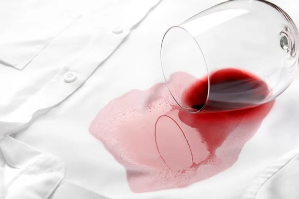

Томатный, чесночный, майонезный….соусы делают наши блюда вкуснее. Но вместе с тем являются очень сложными веществами для стирки. Чтобы избавить от них одежду, вам понадобится глицерин. Нагреваем его до 40 градусов и протираем им пятно. Оставляем на полчаса, а затем стираем вещь как обычно.
Масло и жирС такими загрязнениями важна скорость принятия решения. От этого будет зависеть, спасете вы вещь или нет. Итак, если на любимое платье капнуло масло, засыпьте пятно с двух сторон тальком, порошком мела или картофельным крахмалом. Затем накройте бумагой и поставьте сверху несколько книжек. Нужно создать подобие пресса. Спустя сутки стряхиваем порошок и застирываем изделие обычной теплой водой с порошком. Кстати, рыбий жир считается наиболее тяжеловыводимым пятном. С ним можно попробовать бороться с помощью слабого раствора уксуса.
ШоколадЧтобы избавиться от пятен шоколада, приготовьте раствор из стакана воды и трех столовых ложек соли. У вас должна получиться очень соленая вода. Застирываем этой жидкостью пятно, а затем можно постирать вещь в машинке с порошком.
Жевательная резинкаЧтобы удалить прилившую жевачку с одежды, просто положите вещь в пакет и уберите на пару часов в морозилку. Жевательная резинка легко сойдет с одежды.
ЯйцаЕсли вы случайно запачкали одежду сырым яйцом, то нужно скорее застирать пятно ХОЛОДНОЙ водой. Если сделать это горячей водой, яйцо просто сварится и пятно будет уже не отстирать. После застирывания, протрите испачканное место ватным диском, смоченным слабым раствором уксуса. Затем можно отправлять изделие на стирку.
ЧайПятна от заварки считаются достаточно тяжелыми трудными для выведения. Чтобы их удалить, смешайте 4 столовые ложки глицерина и 1 столовую ложку нашатырного спирта. Полученный раствор наносим на пятно и ждем как минимум час. Затем в тазик с водой добавьте 2 чайные ложки нашатырного спирта и постирайте в ней испачканную одежду.
КофеКофе достаточно легко смывается с одежды. Главное, не тянуть, а стирать как можно быстрее. Можно добавить в воду немного соды и полученным раствором застирать пятно. Так вы избавитесь от него с большей долей вероятности.
 Красное виноВ случае с пятном от вина пользуемся исключительно горячей водой. Можно даже кипятком. Положите вещь в раковину и налейте на пятно кипяток из чайника, оно исчезнет прямо на глазах.
СокиЕсли ребенок пролил на себя сок, то можно избавиться от него с помощью раствора глицерина и спирта в масштабе 1 к 1. Смешиваем оба вещества и наливаем на пятно, оставляем, затем можно потереть щеточкой и постирать теплой водой.
ТраваДля удаления пятен травы снова используем горячую соленую воду. Просто добавьте в тазик с горячей водой пару-тройку столовых ложек соли. Постирайте в этой воде испачканное изделие. Если же пятно въелось, к примеру в белую ткань, то попробуйте воспользоваться следующим раствором: смешайте по чайной ложке 3%-ной перекиси водорода и нашатырного спирта. Нанесите средство на пятно и подождите как минимум полчаса.
ЧернилаЧаще всего чернила попадают на вещи благодаря детям. Чтобы избавиться от пятен ручки, протираем их нашатырным спиртом или раствором воды и пищевой соды.
КровьКровь нужно застирывать как можно скорее. И обязательно ХОЛОДНОЙ водой. Энергично стирайте вещь в воде, можете использовать мыло. Лишним не будет. Если же пятна успели высохнуть, то замочите вещь в холодной воде с добавлением нашатырного спирта.
КосметикаОтстирать пятна от помады, туши дляресниц и тонального средства, как правило, можно водой и обычным мылом. Если же не помогает, то воспользуйтесь перекисью водорода из аптеки. Нанесите раствор перекиси на пятно и немного подождите.